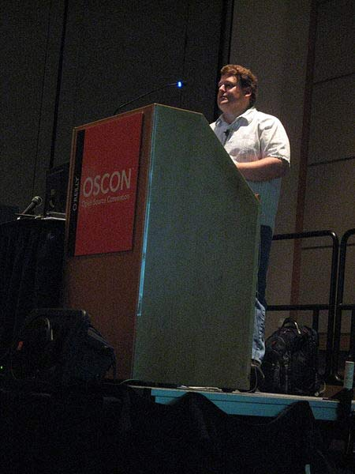

理解RESTful架构
越来越多的人开始意识到，网站即软件，而且是一种新型的软件。
这种"互联网软件"采用客户端/服务器模式，建立在分布式体系上，通过互联网通信，具有高延时（high latency）、高并发等特点。
网站开发，完全可以采用软件开发的模式。但是传统上，软件和网络是两个不同的领域，很少有交集；软件开发主要针对单机环境，网络则主要研究系统之间的通信。互联网的兴起，使得这两个领域开始融合，现在我们必须考虑，如何开发在互联网环境中使用的软件。

RESTful架构，就是目前最流行的一种互联网软件架构。它结构清晰、符合标准、易于理解、扩展方便，所以正得到越来越多网站的采用。
但是，到底什么是RESTful架构，并不是一个容易说清楚的问题。下面，我就谈谈我理解的RESTful架构。
一、起源
REST这个词，是Roy Thomas Fielding在他2000年的博士论文中提出的。

Fielding是一个非常重要的人，他是HTTP协议（1.0版和1.1版）的主要设计者、Apache服务器软件的作者之一、Apache基金会的第一任主席。所以，他的这篇论文一经发表，就引起了关注，并且立即对互联网开发产生了深远的影响。
他这样介绍论文的写作目的：
"本文研究计算机科学两大前沿----软件和网络----的交叉点。长期以来，软件研究主要关注软件设计的分类、设计方法的演化，很少客观地评估不同的设计选择对系统行为的影响。而相反地，网络研究主要关注系统之间通信行为的细节、如何改进特定通信机制的表现，常常忽视了一个事实，那就是改变应用程序的互动风格比改变互动协议，对整体表现有更大的影响。我这篇文章的写作目的，就是想在符合架构原理的前提下，理解和评估以网络为基础的应用软件的架构设计，得到一个功能强、性能好、适宜通信的架构。"
(This dissertation explores a junction on the frontiers of two research disciplines in computer science: software and networking. Software research has long been concerned with the categorization of software designs and the development of design methodologies, but has rarely been able to objectively evaluate the impact of various design choices on system behavior. Networking research, in contrast, is focused on the details of generic communication behavior between systems and improving the performance of particular communication techniques, often ignoring the fact that changing the interaction style of an application can have more impact on performance than the communication protocols used for that interaction. My work is motivated by the desire to understand and evaluate the architectural design of network-based application software through principled use of architectural constraints, thereby obtaining the functional, performance, and social properties desired of an architecture. )
二、名称
Fielding将他对互联网软件的架构原则，定名为REST，即Representational State Transfer的缩写。我对这个词组的翻译是"表现层状态转化"。
如果一个架构符合REST原则，就称它为RESTful架构。
要理解RESTful架构，最好的方法就是去理解Representational State Transfer这个词组到底是什么意思，它的每一个词代表了什么涵义。如果你把这个名称搞懂了，也就不难体会REST是一种什么样的设计。
三、资源（Resources）
REST的名称"表现层状态转化"中，省略了主语。"表现层"其实指的是"资源"（Resources）的"表现层"。
所谓"资源"，就是网络上的一个实体，或者说是网络上的一个具体信息。它可以是一段文本、一张图片、一首歌曲、一种服务，总之就是一个具体的实体。你可以用一个URI（统一资源定位符）指向它，每种资源对应一个特定的URI。要获取这个资源，访问它的URI就可以，因此URI就成了每一个资源的地址或独一无二的识别符。
所谓"上网"，就是与互联网上一系列的"资源"互动，调用它的URI。
四、表现层（Representation）
"资源"是一种信息实体，它可以有多种外在表现形式。我们把"资源"具体呈现出来的形式，叫做它的"表现层"（Representation）。
比如，文本可以用txt格式表现，也可以用HTML格式、XML格式、JSON格式表现，甚至可以采用二进制格式；图片可以用JPG格式表现，也可以用PNG格式表现。
URI只代表资源的实体，不代表它的形式。严格地说，有些网址最后的".html"后缀名是不必要的，因为这个后缀名表示格式，属于"表现层"范畴，而URI应该只代表"资源"的位置。它的具体表现形式，应该在HTTP请求的头信息中用Accept和Content-Type字段指定，这两个字段才是对"表现层"的描述。
五、状态转化（State Transfer）
访问一个网站，就代表了客户端和服务器的一个互动过程。在这个过程中，势必涉及到数据和状态的变化。
互联网通信协议HTTP协议，是一个无状态协议。这意味着，所有的状态都保存在服务器端。因此，如果客户端想要操作服务器，必须通过某种手段，让服务器端发生"状态转化"（State Transfer）。而这种转化是建立在表现层之上的，所以就是"表现层状态转化"。
客户端用到的手段，只能是HTTP协议。具体来说，就是HTTP协议里面，四个表示操作方式的动词：GET、POST、PUT、DELETE。它们分别对应四种基本操作：GET用来获取资源，POST用来新建资源（也可以用于更新资源），PUT用来更新资源，DELETE用来删除资源。
六、综述
综合上面的解释，我们总结一下什么是RESTful架构：
（1）每一个URI代表一种资源；
（2）客户端和服务器之间，传递这种资源的某种表现层（Representation）；
（3）客户端通过四个HTTP动词，对服务器端资源进行操作，实现"表现层状态转化"。
七、误区
RESTful架构有一些典型的设计误区。
最常见的一种设计错误，就是URI包含动词。因为"资源"表示一种实体，所以应该是名词，URI不应该有动词，动词应该放在HTTP协议中。
举例来说，某个URI是/posts/show/1，其中show是动词，这个URI就设计错了，正确的写法应该是/posts/1，然后用GET方法表示show。
如果某些动作是HTTP动词表示不了的，你就应该把动作做成一种资源。比如网上汇款，从账户1向账户2汇款500元，错误的URI是：
POST /accounts/1/transfer/500/to/2
正确的写法是把动词transfer改成名词transaction，资源不能是动词，但是可以是一种服务：
POST /transaction HTTP/1.1
Host: 127.0.0.1
from=1&to=2&amount=500.00
另一个设计误区，就是在URI中加入版本号：
http://www.example.com/app/1.0/foo
http://www.example.com/app/1.1/foo
http://www.example.com/app/2.0/foo
因为不同的版本，可以理解成同一种资源的不同表现形式，所以应该采用同一个URI。版本号可以在HTTP请求头信息的Accept字段中进行区分（参见Versioning REST Services）：
Accept: vnd.example-com.foo+json; version=1.0
Accept: vnd.example-com.foo+json; version=1.1
Accept: vnd.example-com.foo+json; version=2.0